Patch Editor¶
A patch is a snapshot of a rack: it stores cable connections, control positions, notes, groups, and screen images independently from every other patch on the same rack. You can have as many patches per rack as you like.
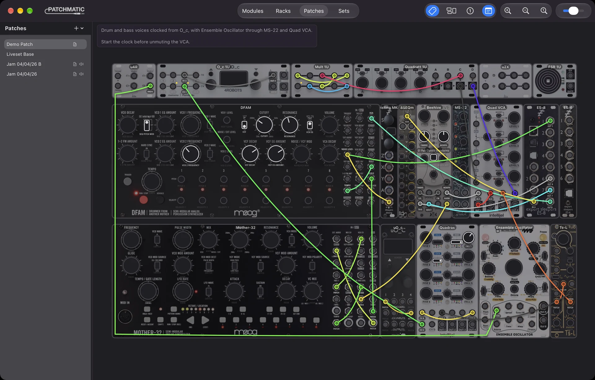
Toolbar¶
| Toggle | Action |
|---|---|
| Labels | Show or hide control labels |
| Groups | Show or hide group overlays and the group list |
| Numbers | Show or hide patch point sequence numbers |
| Notes | Show or hide the patch notes overlay |
The toolbar also has zoom in, zoom out, frame to fit, and the module image opacity slider.
Creating, duplicating, and deleting patches¶
Click + in the patch list, or use Patches > New Patch, and choose a rack from the submenu.
Right-click a patch in the list for Rename, Patch Notes…, Duplicate, and Delete…. Duplicating (Cmd+D) copies the cables, control values, screen images, notes, groups, patch notes, and audio.
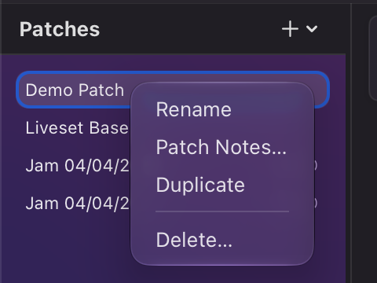
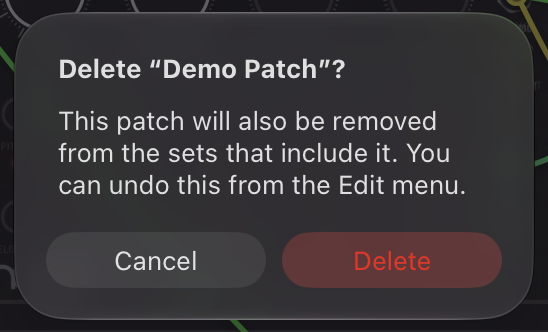
Deleting a patch asks for confirmation, and warns if the patch will also be removed from any sets. Deletion can be undone with Edit > Undo, which restores the patch and its place in each set.
Drawing cables¶
Drag from one patch point to another. A preview cable follows the pointer, and the cable is created when you release over a valid patch point. Colors are assigned automatically from a 24-color palette in rotation.
To change a cable's color, right-click it and choose Change Color.
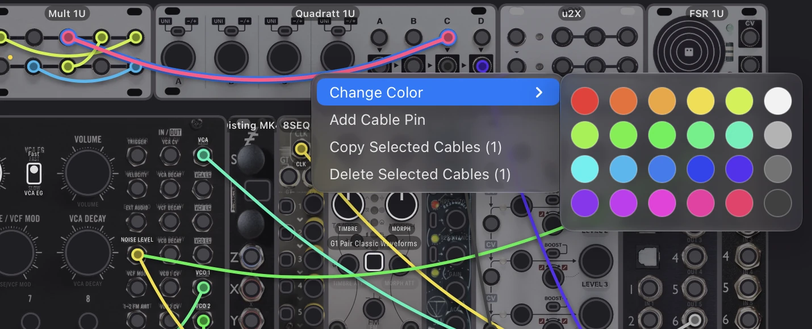
Selecting cables¶
- Right-click a cable to select it and show its context menu
- Shift+Click a cable to add it to or remove it from the selection
- Shift+Drag to draw a marquee; every cable it touches is added to the selection (when the Groups toggle is off)
- Right-click a patched patch point to select all of its cables and show the cable menu
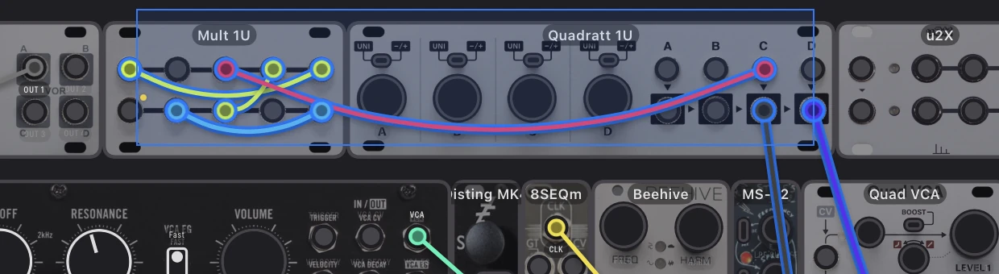
Deleting cables¶
Delete the selected cables with the Delete key or Delete Selected Cables in the cable menu.
The canvas context menu also has a Delete Cable submenu listing every cable by its endpoints, in the form "Module Jack → Module Jack". A patch point without a label is shown by its sequence number.
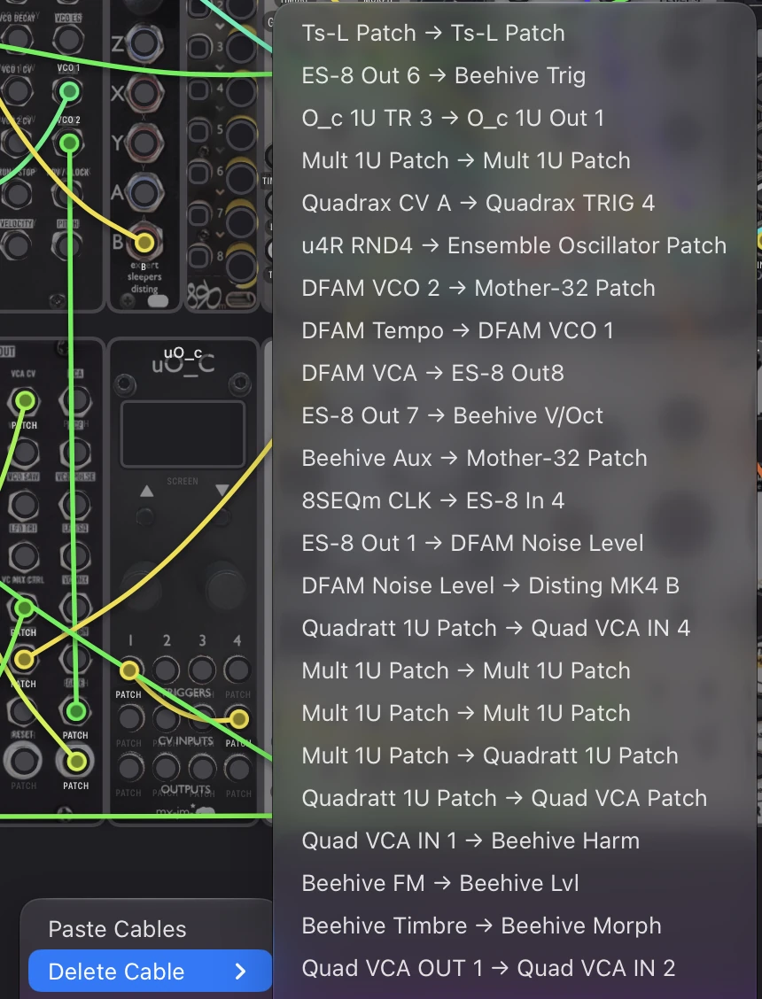
Copying and pasting cables¶
Copy the selected cables with Cmd+C, Copy Selected Cables in the cable menu, or Patches > Copy Cables. Paste with Cmd+V, Paste Cables in the canvas or cable menu, or Patches > Paste Cables.
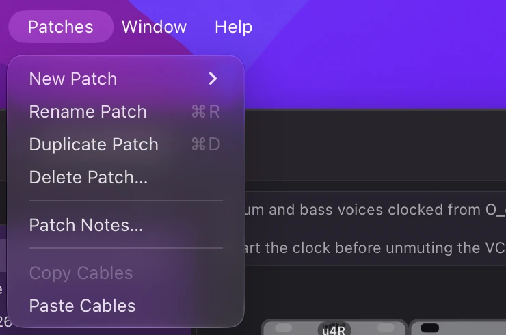
Cables can only be pasted into a patch on the rack they were copied from. Pasted cables become the selection. Cables whose modules are no longer in the rack, or that duplicate an existing connection, are skipped.
Routing cables with pins¶
Pins are waypoints that redirect a cable's path.
- Cmd+Click a cable, or choose Add Cable Pin in its menu, to add a pin
- Drag a pin to move it
- Right-click a pin and choose Delete Cable Pin, or select it and press Delete
Pins attached to a case move with the case.
Adjusting controls¶
- Knobs — drag vertically (up increases, down decreases)
- Sliders — drag along the slider
- Toggle switches and buttons — click to step to the next named state
All control values are stored per patch.
Screen images¶
Hover over a screen to show its toolbar:
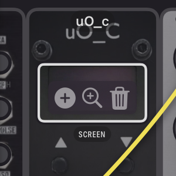
- + — attach an image
- Magnifier — show the current image enlarged
- Trash — delete the current image
- ← / → — cycle through images, when a screen has more than one
Attaching an image opens a dialog. By default the whole image is used. Check Crop Image to show a crop rectangle, and Lock Aspect Ratio to keep it to the screen's shape.
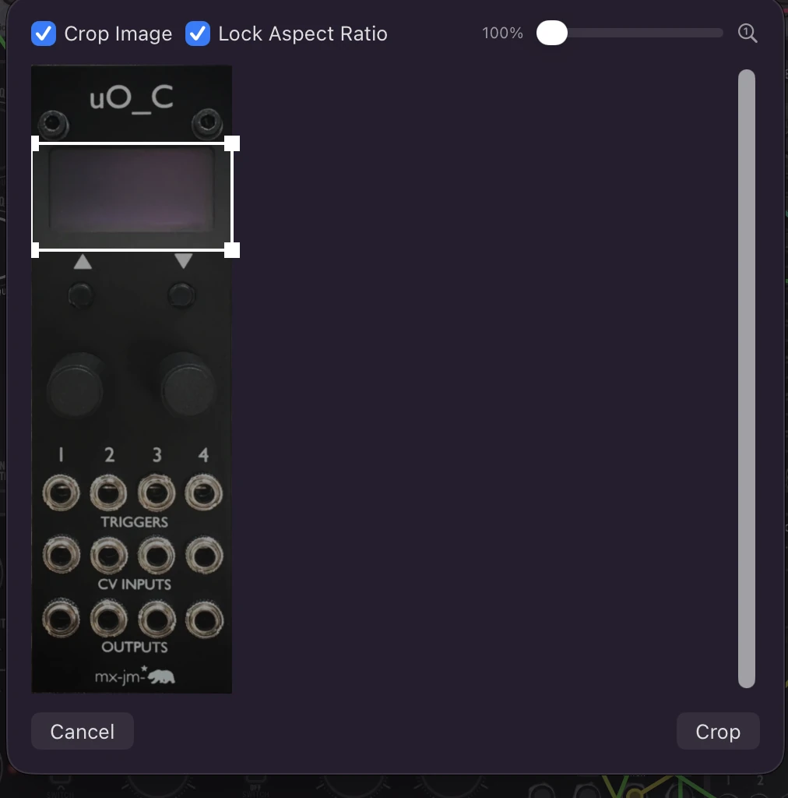
Notes¶
Patch point notes — right-click a patch point with no cables and choose Add Patch Point Note or Edit Patch Point Note. A dot marks the patch point; hover over it to read the note.
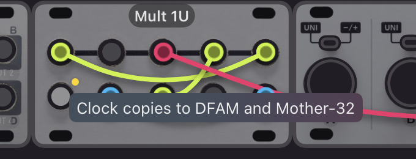
Module notes — right-click the module body (not over a patch point) and choose Add Note to place a free-form note on the panel.
Both kinds of note are stored per patch.
Groups¶
Groups color-highlight sets of modules. Turn on the Groups toggle to show the overlays and the floating group list.
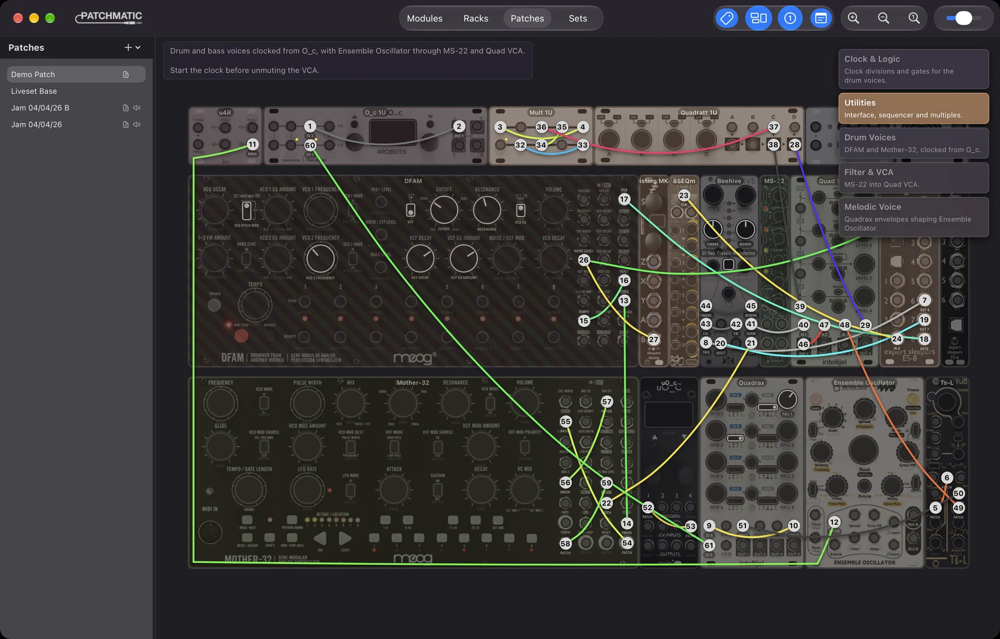
With the Groups toggle on:
- Create a group — right-click a module and choose New Group with name. Shift+Right-click to add more modules to the selection first.
- Add or remove modules — right-click a module and use Add to Group or Remove from Group
- Hover a group card — highlights that group's modules and fades the rest
- Click a group card — frames the group's modules
- Right-click a group card — rename, edit notes, or delete the group
Patch notes¶
Each patch has free-form notes and an optional audio preview. The notes appear in an overlay at the top of the canvas when the Notes toggle is on, Hover over the overlay to show a play button when audio is attached.
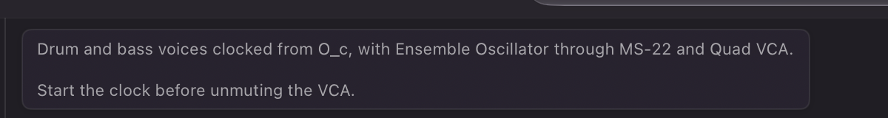
Click the overlay, choose Patch Notes… from the canvas or patch list menu, or use Patches > Patch Notes… to edit them. Attach Audio Preview adds an audio file to the patch.
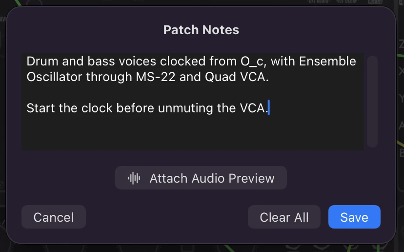
Canvas navigation¶
- Scroll wheel or pinch — zoom (0.25×–5.0×)
- Drag on empty space — pan
- Frame to Fit — fits all cases to the viewport (Cmd+0 or toolbar button)
Saving¶
Changes start an edit session with a Discard Edits / Save Changes bar at the bottom of the canvas.